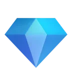

My English World
Book 4 · My Picture Dictionary
Unit 48
Pirates
Tap any picture or sentence to listen.
🖼️ Look and say
flag
ship
map
island
parrot
gold
telescope

jewel
▶ Play all words
💬 Words in sentences
The pirate ship has a big sail.
🔊
The map shows the treasure.
🔊
The parrot sits on the pirate's shoulder.
🔊
We found the gold!
🔊
▶ Play all sentences
‹ Fun Fair
All units